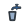

<!doctype html>
<html lang="en">
    <head>
        <meta charset="utf-8">
        <meta http-equiv="X-UA-Compatible" content="IE=edge">
        <meta name="viewport" content="initial-scale=1,user-scalable=no,maximum-scale=1,width=device-width">
        <meta name="mobile-web-app-capable" content="yes">
        <meta name="apple-mobile-web-app-capable" content="yes">
        <link rel="stylesheet" href="css/leaflet.css">
        <link rel="stylesheet" href="css/L.Control.Layers.Tree.css">
        <link rel="stylesheet" href="css/qgis2web.css">
        <link rel="stylesheet" href="css/fontawesome-all.min.css">
        <link rel="stylesheet" href="css/leaflet.photon.css">
        <style>
        html, body, #map {
            width: 100%;
            height: 100%;
            padding: 0;
            margin: 0;
        }
        </style>
        <title></title>
    </head>
    <body>
        <div id="map">
        </div>
        <script src="js/qgis2web_expressions.js"></script>
        <script src="js/leaflet.js"></script>
        <script src="js/L.Control.Layers.Tree.min.js"></script>
        <script src="js/leaflet-svg-shape-markers.min.js"></script>
        <script src="js/leaflet.rotatedMarker.js"></script>
        <script src="js/leaflet.pattern.js"></script>
        <script src="js/leaflet-hash.js"></script>
        <script src="js/Autolinker.min.js"></script>
        <script src="js/rbush.min.js"></script>
        <script src="js/labelgun.min.js"></script>
        <script src="js/labels.js"></script>
        <script src="js/leaflet.photon.js"></script>
        <script src="data/voravies_1.js"></script>
        <script src="data/arbres_2.js"></script>
        <script src="data/fonts_3.js"></script>
        <script src="data/lavabos_4.js"></script>
        <script src="data/bancs_5.js"></script>
        <script src="data/incidencies_6.js"></script>
        <script src="data/pasdevianants_7.js"></script>
        <script>
        var map = L.map('map', {
            zoomControl:false, maxZoom:28, minZoom:1
        }).fitBounds([[42.49388236781127,1.4977548309134876],[42.49725246719257,1.5020517076246451]]);
        var hash = new L.Hash(map);
        map.attributionControl.setPrefix('<a href="https://github.com/tomchadwin/qgis2web" target="_blank">qgis2web</a> &middot; <a href="https://leafletjs.com" title="A JS library for interactive maps">Leaflet</a> &middot; <a href="https://qgis.org">QGIS</a>');
        var autolinker = new Autolinker({truncate: {length: 30, location: 'smart'}});
        // remove popup's row if "visible-with-data"
        function removeEmptyRowsFromPopupContent(content, feature) {
         var tempDiv = document.createElement('div');
         tempDiv.innerHTML = content;
         var rows = tempDiv.querySelectorAll('tr');
         for (var i = 0; i < rows.length; i++) {
             var td = rows[i].querySelector('td.visible-with-data');
             var key = td ? td.id : '';
             if (td && td.classList.contains('visible-with-data') && feature.properties[key] == null) {
                 rows[i].parentNode.removeChild(rows[i]);
             }
         }
         return tempDiv.innerHTML;
        }
        // modify popup if contains media
        function addClassToPopupIfMedia(content, popup) {
            var tempDiv = document.createElement('div');
            tempDiv.innerHTML = content;
            var imgTd = tempDiv.querySelector('td img');
            if (imgTd) {
                var src = imgTd.getAttribute('src');
                if (/\.(jpg|jpeg|png|gif|bmp|webp|avif)$/i.test(src)) {
                    popup._contentNode.classList.add('media');
                    setTimeout(function() {
                        popup.update();
                    }, 10);
                } else if (/\.(mp3|wav|ogg|aac)$/i.test(src)) {
                    var audio = document.createElement('audio');
                    audio.controls = true;
                    audio.src = src;
                    imgTd.parentNode.replaceChild(audio, imgTd);
                    popup._contentNode.classList.add('media');
                    setTimeout(function() {
                        popup.setContent(tempDiv.innerHTML);
                        popup.update();
                    }, 10);
                } else if (/\.(mp4|webm|ogg|mov)$/i.test(src)) {
                    var video = document.createElement('video');
                    video.controls = true;
                    video.src = src;
                    video.style.width = "400px";
                    video.style.height = "300px";
                    video.style.maxHeight = "60vh";
                    video.style.maxWidth = "60vw";
                    imgTd.parentNode.replaceChild(video, imgTd);
                    popup._contentNode.classList.add('media');
                    // Aggiorna il popup quando il video carica i metadati
                    video.addEventListener('loadedmetadata', function() {
                        popup.update();
                    });
                    setTimeout(function() {
                        popup.setContent(tempDiv.innerHTML);
                        popup.update();
                    }, 10);
                } else {
                    popup._contentNode.classList.remove('media');
                }
            } else {
                popup._contentNode.classList.remove('media');
            }
        }
        var zoomControl = L.control.zoom({
            position: 'topleft'
        }).addTo(map);
        var bounds_group = new L.featureGroup([]);
        function setBounds() {
        }
        map.createPane('pane_GoogleSatellite_0');
        map.getPane('pane_GoogleSatellite_0').style.zIndex = 400;
        var layer_GoogleSatellite_0 = L.tileLayer('https://mt1.google.com/vt/lyrs=s&x={x}&y={y}&z={z}', {
            pane: 'pane_GoogleSatellite_0',
            opacity: 0.673,
            attribution: '<a href="https://www.google.at/permissions/geoguidelines/attr-guide.html">Map data ©2015 Google</a>',
            minZoom: 1,
            maxZoom: 28,
            minNativeZoom: 0,
            maxNativeZoom: 20
        });
        layer_GoogleSatellite_0;
        map.addLayer(layer_GoogleSatellite_0);
        function pop_voravies_1(feature, layer) {
            var popupContent = '<table>\
                    <tr>\
                        <td colspan="2">' + (feature.properties['fid'] !== null ? autolinker.link(String(feature.properties['fid']).replace(/'/g, '\'').toLocaleString()) : '') + '</td>\
                    </tr>\
                </table>';
            var content = removeEmptyRowsFromPopupContent(popupContent, feature);
			layer.on('popupopen', function(e) {
				addClassToPopupIfMedia(content, e.popup);
			});
			layer.bindPopup(content, { maxHeight: 400 });
        }

        function style_voravies_1_0() {
            return {
                pane: 'pane_voravies_1',
                opacity: 1,
                color: 'rgba(253,191,111,1.0)',
                dashArray: '',
                lineCap: 'square',
                lineJoin: 'bevel',
                weight: 3.0,
                fillOpacity: 0,
                interactive: false,
            }
        }
        map.createPane('pane_voravies_1');
        map.getPane('pane_voravies_1').style.zIndex = 401;
        map.getPane('pane_voravies_1').style['mix-blend-mode'] = 'normal';
        var layer_voravies_1 = new L.geoJson(json_voravies_1, {
            attribution: '',
            interactive: false,
            dataVar: 'json_voravies_1',
            layerName: 'layer_voravies_1',
            pane: 'pane_voravies_1',
            onEachFeature: pop_voravies_1,
            style: style_voravies_1_0,
        });
        bounds_group.addLayer(layer_voravies_1);
        map.addLayer(layer_voravies_1);
        function pop_arbres_2(feature, layer) {
            var popupContent = '<table>\
                    <tr>\
                        <td colspan="2">' + (feature.properties['fid'] !== null ? autolinker.link(String(feature.properties['fid']).replace(/'/g, '\'').toLocaleString()) : '') + '</td>\
                    </tr>\
                </table>';
            var content = removeEmptyRowsFromPopupContent(popupContent, feature);
			layer.on('popupopen', function(e) {
				addClassToPopupIfMedia(content, e.popup);
			});
			layer.bindPopup(content, { maxHeight: 400 });
        }

        function style_arbres_2_0() {
            return {
                pane: 'pane_arbres_2',
                radius: 4.0,
                opacity: 1,
                color: 'rgba(0,0,0,1.0)',
                dashArray: '',
                lineCap: 'butt',
                lineJoin: 'miter',
                weight: 1,
                fill: true,
                fillOpacity: 1,
                fillColor: 'rgba(51,160,44,1.0)',
                interactive: false,
            }
        }
        map.createPane('pane_arbres_2');
        map.getPane('pane_arbres_2').style.zIndex = 402;
        map.getPane('pane_arbres_2').style['mix-blend-mode'] = 'normal';
        var layer_arbres_2 = new L.geoJson(json_arbres_2, {
            attribution: '',
            interactive: false,
            dataVar: 'json_arbres_2',
            layerName: 'layer_arbres_2',
            pane: 'pane_arbres_2',
            onEachFeature: pop_arbres_2,
            pointToLayer: function (feature, latlng) {
                var context = {
                    feature: feature,
                    variables: {}
                };
                return L.circleMarker(latlng, style_arbres_2_0(feature));
            },
        });
        bounds_group.addLayer(layer_arbres_2);
        map.addLayer(layer_arbres_2);
        function pop_fonts_3(feature, layer) {
            var popupContent = '<table>\
                    <tr>\
                        <td colspan="2">' + (feature.properties['fid'] !== null ? autolinker.link(String(feature.properties['fid']).replace(/'/g, '\'').toLocaleString()) : '') + '</td>\
                    </tr>\
                </table>';
            var content = removeEmptyRowsFromPopupContent(popupContent, feature);
			layer.on('popupopen', function(e) {
				addClassToPopupIfMedia(content, e.popup);
			});
			layer.bindPopup(content, { maxHeight: 400 });
        }

        function style_fonts_3_0() {
            return {
                pane: 'pane_fonts_3',
        rotationAngle: 0.0,
        rotationOrigin: 'center center',
        icon: L.icon({
            iconUrl: 'markers/fonts_3.svg',
            iconSize: [19.0, 19.0]
        }),
                interactive: false,
            }
        }
        map.createPane('pane_fonts_3');
        map.getPane('pane_fonts_3').style.zIndex = 403;
        map.getPane('pane_fonts_3').style['mix-blend-mode'] = 'normal';
        var layer_fonts_3 = new L.geoJson(json_fonts_3, {
            attribution: '',
            interactive: false,
            dataVar: 'json_fonts_3',
            layerName: 'layer_fonts_3',
            pane: 'pane_fonts_3',
            onEachFeature: pop_fonts_3,
            pointToLayer: function (feature, latlng) {
                var context = {
                    feature: feature,
                    variables: {}
                };
                return L.marker(latlng, style_fonts_3_0(feature));
            },
        });
        bounds_group.addLayer(layer_fonts_3);
        map.addLayer(layer_fonts_3);
        function pop_lavabos_4(feature, layer) {
            var popupContent = '<table>\
                    <tr>\
                        <td colspan="2">' + (feature.properties['fid'] !== null ? autolinker.link(String(feature.properties['fid']).replace(/'/g, '\'').toLocaleString()) : '') + '</td>\
                    </tr>\
                    <tr>\
                        <td colspan="2">' + (feature.properties['id'] !== null ? autolinker.link(String(feature.properties['id']).replace(/'/g, '\'').toLocaleString()) : '') + '</td>\
                    </tr>\
                </table>';
            var content = removeEmptyRowsFromPopupContent(popupContent, feature);
			layer.on('popupopen', function(e) {
				addClassToPopupIfMedia(content, e.popup);
			});
			layer.bindPopup(content, { maxHeight: 400 });
        }

        function style_lavabos_4_0() {
            return {
                pane: 'pane_lavabos_4',
                shape: 'triangle',
                radius: 4.0,
                opacity: 1,
                color: 'rgba(0,0,0,1.0)',
                dashArray: '',
                lineCap: 'butt',
                lineJoin: 'miter',
                weight: 1,
                fill: true,
                fillOpacity: 1,
                fillColor: 'rgba(255,255,255,1.0)',
                interactive: false,
            }
        }
        map.createPane('pane_lavabos_4');
        map.getPane('pane_lavabos_4').style.zIndex = 404;
        map.getPane('pane_lavabos_4').style['mix-blend-mode'] = 'normal';
        var layer_lavabos_4 = new L.geoJson(json_lavabos_4, {
            attribution: '',
            interactive: false,
            dataVar: 'json_lavabos_4',
            layerName: 'layer_lavabos_4',
            pane: 'pane_lavabos_4',
            onEachFeature: pop_lavabos_4,
            pointToLayer: function (feature, latlng) {
                var context = {
                    feature: feature,
                    variables: {}
                };
                return L.shapeMarker(latlng, style_lavabos_4_0(feature));
            },
        });
        bounds_group.addLayer(layer_lavabos_4);
        map.addLayer(layer_lavabos_4);
        function pop_bancs_5(feature, layer) {
            var popupContent = '<table>\
                    <tr>\
                        <td colspan="2">' + (feature.properties['fid'] !== null ? autolinker.link(String(feature.properties['fid']).replace(/'/g, '\'').toLocaleString()) : '') + '</td>\
                    </tr>\
                </table>';
            var content = removeEmptyRowsFromPopupContent(popupContent, feature);
			layer.on('popupopen', function(e) {
				addClassToPopupIfMedia(content, e.popup);
			});
			layer.bindPopup(content, { maxHeight: 400 });
        }

        function style_bancs_5_0() {
            return {
                pane: 'pane_bancs_5',
        rotationAngle: 0.0,
        rotationOrigin: 'center center',
        icon: L.icon({
            iconUrl: 'markers/bancs_5.svg',
            iconSize: [22.799999999999997, 22.799999999999997]
        }),
                interactive: false,
            }
        }
        map.createPane('pane_bancs_5');
        map.getPane('pane_bancs_5').style.zIndex = 405;
        map.getPane('pane_bancs_5').style['mix-blend-mode'] = 'normal';
        var layer_bancs_5 = new L.geoJson(json_bancs_5, {
            attribution: '',
            interactive: false,
            dataVar: 'json_bancs_5',
            layerName: 'layer_bancs_5',
            pane: 'pane_bancs_5',
            onEachFeature: pop_bancs_5,
            pointToLayer: function (feature, latlng) {
                var context = {
                    feature: feature,
                    variables: {}
                };
                return L.marker(latlng, style_bancs_5_0(feature));
            },
        });
        bounds_group.addLayer(layer_bancs_5);
        map.addLayer(layer_bancs_5);
        function pop_incidencies_6(feature, layer) {
            var popupContent = '<table>\
                    <tr>\
                        <td colspan="2">' + (feature.properties['fid'] !== null ? autolinker.link(String(feature.properties['fid']).replace(/'/g, '\'').toLocaleString()) : '') + '</td>\
                    </tr>\
                </table>';
            var content = removeEmptyRowsFromPopupContent(popupContent, feature);
			layer.on('popupopen', function(e) {
				addClassToPopupIfMedia(content, e.popup);
			});
			layer.bindPopup(content, { maxHeight: 400 });
        }

        function style_incidencies_6_0() {
            return {
                pane: 'pane_incidencies_6',
                radius: 4.0,
                opacity: 1,
                color: 'rgba(0,0,0,1.0)',
                dashArray: '',
                lineCap: 'butt',
                lineJoin: 'miter',
                weight: 1,
                fill: true,
                fillOpacity: 1,
                fillColor: 'rgba(227,26,28,1.0)',
                interactive: false,
            }
        }
        map.createPane('pane_incidencies_6');
        map.getPane('pane_incidencies_6').style.zIndex = 406;
        map.getPane('pane_incidencies_6').style['mix-blend-mode'] = 'normal';
        var layer_incidencies_6 = new L.geoJson(json_incidencies_6, {
            attribution: '',
            interactive: false,
            dataVar: 'json_incidencies_6',
            layerName: 'layer_incidencies_6',
            pane: 'pane_incidencies_6',
            onEachFeature: pop_incidencies_6,
            pointToLayer: function (feature, latlng) {
                var context = {
                    feature: feature,
                    variables: {}
                };
                return L.shapeMarker(latlng, style_incidencies_6_0(feature));
            },
        });
        bounds_group.addLayer(layer_incidencies_6);
        map.addLayer(layer_incidencies_6);
        function pop_pasdevianants_7(feature, layer) {
            var popupContent = '<table>\
                    <tr>\
                        <td colspan="2">' + (feature.properties['fid'] !== null ? autolinker.link(String(feature.properties['fid']).replace(/'/g, '\'').toLocaleString()) : '') + '</td>\
                    </tr>\
                </table>';
            var content = removeEmptyRowsFromPopupContent(popupContent, feature);
			layer.on('popupopen', function(e) {
				addClassToPopupIfMedia(content, e.popup);
			});
			layer.bindPopup(content, { maxHeight: 400 });
        }

        function style_pasdevianants_7_0() {
            return {
                pane: 'pane_pasdevianants_7',
                radius: 4.0,
                opacity: 1,
                color: 'rgba(35,35,35,1.0)',
                dashArray: '',
                lineCap: 'butt',
                lineJoin: 'miter',
                weight: 1,
                fill: true,
                fillOpacity: 1,
                fillColor: 'rgba(243,166,178,1.0)',
                interactive: false,
            }
        }
        map.createPane('pane_pasdevianants_7');
        map.getPane('pane_pasdevianants_7').style.zIndex = 407;
        map.getPane('pane_pasdevianants_7').style['mix-blend-mode'] = 'normal';
        var layer_pasdevianants_7 = new L.geoJson(json_pasdevianants_7, {
            attribution: '',
            interactive: false,
            dataVar: 'json_pasdevianants_7',
            layerName: 'layer_pasdevianants_7',
            pane: 'pane_pasdevianants_7',
            onEachFeature: pop_pasdevianants_7,
            pointToLayer: function (feature, latlng) {
                var context = {
                    feature: feature,
                    variables: {}
                };
                return L.circleMarker(latlng, style_pasdevianants_7_0(feature));
            },
        });
        bounds_group.addLayer(layer_pasdevianants_7);
        map.addLayer(layer_pasdevianants_7);
        var overlaysTree = [
        {label: '<b>QGIS2WEB</b>',  selectAllCheckbox: true, children: [
            {label: ' pas de vianants', layer: layer_pasdevianants_7},
            {label: ' incidencies', layer: layer_incidencies_6},
            {label: ' bancs', layer: layer_bancs_5},
            {label: ' lavabos', layer: layer_lavabos_4},
            {label: ' fonts', layer: layer_fonts_3},
            {label: ' arbres', layer: layer_arbres_2},
            {label: ' voravies', layer: layer_voravies_1},]},
            {label: "Google Satellite", layer: layer_GoogleSatellite_0, radioGroup: 'bm' },]
        var lay = L.control.layers.tree(null, overlaysTree,{
            //namedToggle: true,
            //selectorBack: false,
            //closedSymbol: '&#8862; &#x1f5c0;',
            //openedSymbol: '&#8863; &#x1f5c1;',
            //collapseAll: 'Collapse all',
            //expandAll: 'Expand all',
            collapsed: false, 
        });
        lay.addTo(map);
		document.addEventListener("DOMContentLoaded", function() {
            // set new Layers List height which considers toggle icon
            function newLayersListHeight() {
                var layerScrollbarElement = document.querySelector('.leaflet-control-layers-scrollbar');
                if (layerScrollbarElement) {
                    var layersListElement = document.querySelector('.leaflet-control-layers-list');
                    var originalHeight = layersListElement.style.height 
                        || window.getComputedStyle(layersListElement).height;
                    var newHeight = parseFloat(originalHeight) - 50;
                    layersListElement.style.height = newHeight + 'px';
                }
            }
            var isLayersListExpanded = true;
            var controlLayersElement = document.querySelector('.leaflet-control-layers');
            var toggleLayerControl = document.querySelector('.leaflet-control-layers-toggle');
            // toggle Collapsed/Expanded and apply new Layers List height
            toggleLayerControl.addEventListener('click', function() {
                if (isLayersListExpanded) {
                    controlLayersElement.classList.remove('leaflet-control-layers-expanded');
                } else {
                    controlLayersElement.classList.add('leaflet-control-layers-expanded');
                }
                isLayersListExpanded = !isLayersListExpanded;
                newLayersListHeight()
            });	
			// apply new Layers List height if toggle layerstree
			if (controlLayersElement) {
				controlLayersElement.addEventListener('click', function(event) {
					var toggleLayerHeaderPointer = event.target.closest('.leaflet-layerstree-header-pointer span');
					if (toggleLayerHeaderPointer) {
						newLayersListHeight();
					}
				});
			}
            // Collapsed/Expanded at Start to apply new height
            setTimeout(function() {
                toggleLayerControl.click();
            }, 10);
            setTimeout(function() {
                toggleLayerControl.click();
            }, 10);
            // Collapsed touch/small screen
            var isSmallScreen = window.innerWidth < 650;
            if (isSmallScreen) {
                setTimeout(function() {
                    controlLayersElement.classList.remove('leaflet-control-layers-expanded');
                    isLayersListExpanded = !isLayersListExpanded;
                }, 500);
            }  
        });       
        setBounds();
        </script>        
    </body>
</html>
